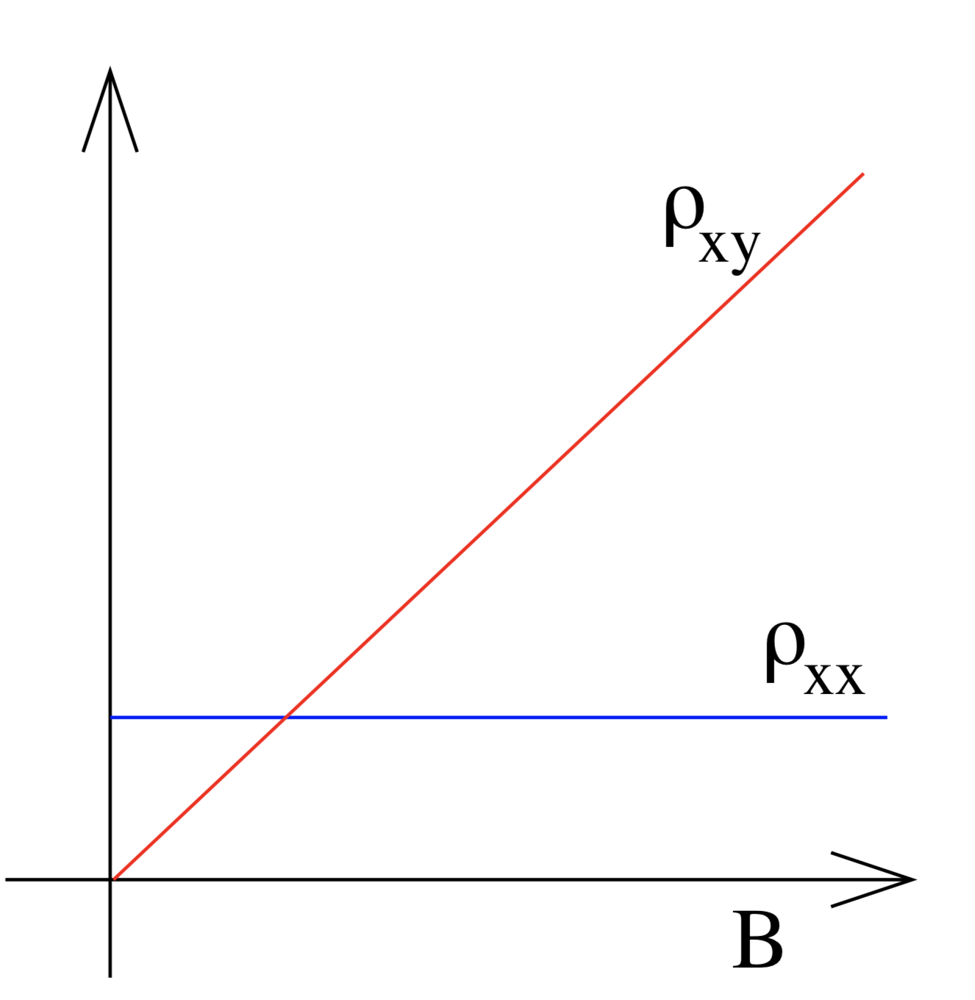
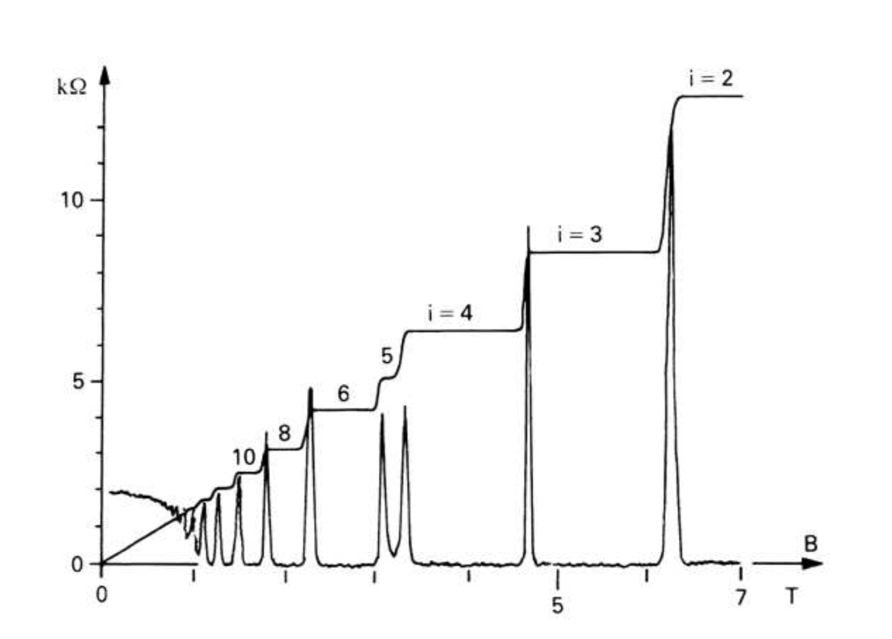
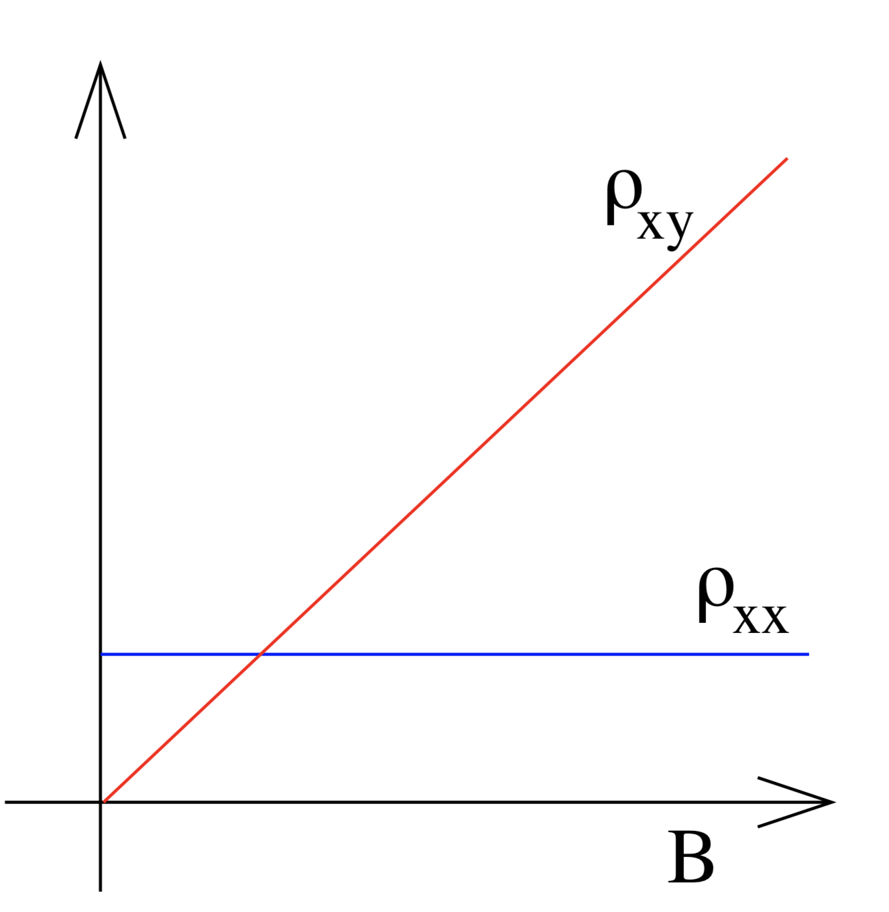
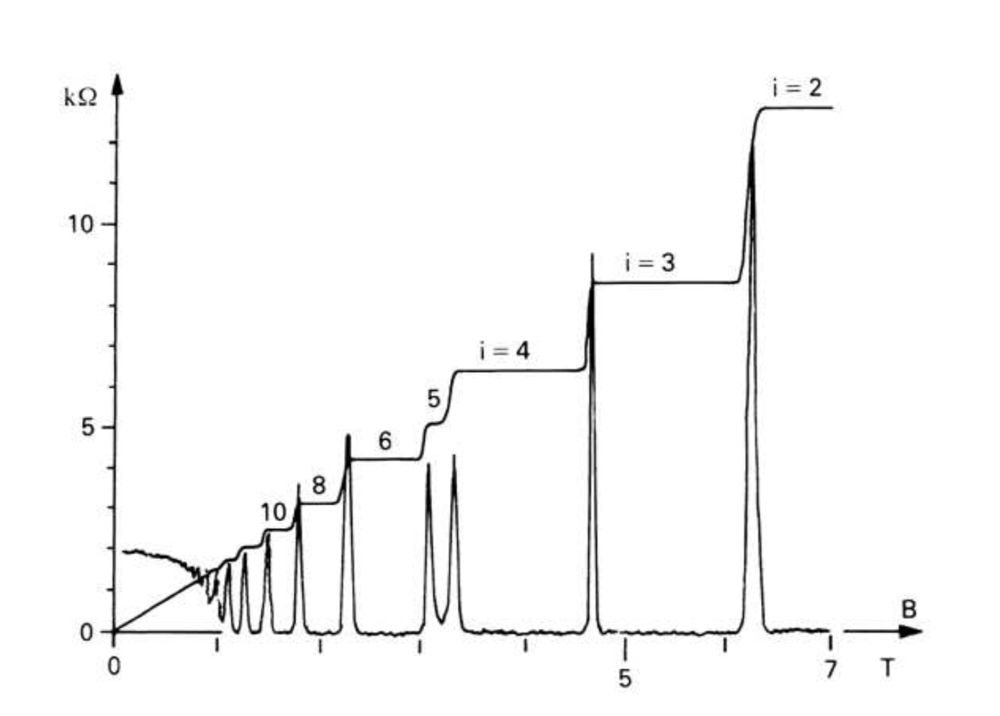

The Basics
The Drude Model
Newton Law
\begin{equation} \mathbf{p}(t+dt) =\mathbf{p}(t) + \mathbf{f}dt\end{equation}
the possibility for electron collision is
\begin{equation}P = 1-\frac{dt}{\tau}\end{equation}
then we have
\begin{equation} \langle \mathbf{p}(t+dt)\rangle = \left(1-\frac{dt}{\tau}\right)\left[ \langle \mathbf{p}(t)\rangle +\mathbf{f}(t)dt \right]\end{equation}
\begin{equation} \frac{d\langle \mathbf{p}(t)\rangle }{dt}= -\frac{ \langle \mathbf{p}(t)\rangle }{\tau} +\mathbf{f}(t)\end{equation}
\begin{equation}m\frac{d\langle\mathbf{v}\rangle}{dt}=-e\mathbf{E}-e\langle\mathbf{v}\rangle\times\mathbf{B}-\frac{m\langle\mathbf{v}\rangle}{\tau}\qquad\qquad(1.4)\end{equation}
we're interested in equilibrium solution which have `d\mathbf{v}/dt=0`
\begin{equation}\langle\mathbf{v}\rangle+\frac{e\tau}{m}\langle\mathbf{v}\rangle\times\mathbf{B} = -\frac{e\tau}{m}\mathbf{E}\qquad\qquad(1.5)\end{equation}
the current
\begin{equation}\mathbf{J} = -ne\langle\mathbf{v}\rangle\end{equation}
where n is the density of charge carriers. Then we have
\begin{equation} \left(\begin{matrix}1&\omega_B\tau\\
-\omega_B\tau&1\end{matrix}\right)\mathbf{J} = \frac{e^2n\tau}{m}\mathbf{E} \end{equation}
and
\begin{equation} \mathbf{J} = \frac{e^2n\tau}{m(1+\omega_B^2\tau^2)}\left(\begin{matrix}1&-\omega_B\tau\\
\omega_B\tau&1\end{matrix}\right)\mathbf{E} \end{equation}
where `\omega_B=\frac{eB\tau}{m}`
resistivity \begin{equation} \rho =\left(\begin{matrix}\rho_{xx}&\rho_{xy}\\ -\rho_{xy}&\rho_{xx}\end{matrix}\right)= \frac{m}{e^2n\tau}\left(\begin{matrix}1&\omega_B\tau\\ -\omega_B\tau&1\end{matrix}\right)\mathbf{E} \end{equation} conductivity \begin{equation} \sigma =\left(\begin{matrix}\sigma_{xx}&\sigma_{xy}\\ -\sigma_{xy}&\sigma_{xx}\end{matrix}\right)= \frac{e^2n\tau}{m(1+\omega_B^2\tau^2)}\left(\begin{matrix}1&-\omega_B\tau\\ \omega_B\tau&1\end{matrix}\right)\mathbf{E} \end{equation} Now we can make an experimental prediction \begin{equation} \rho_{xx} = \frac{m}{ne^2\tau} \end{equation} \begin{equation} \rho_{xy} = \frac{B}{ne} \end{equation}  
resistivity \begin{equation} \rho =\left(\begin{matrix}\rho_{xx}&\rho_{xy}\\ -\rho_{xy}&\rho_{xx}\end{matrix}\right)= \frac{m}{e^2n\tau}\left(\begin{matrix}1&\omega_B\tau\\ -\omega_B\tau&1\end{matrix}\right)\mathbf{E} \end{equation} conductivity \begin{equation} \sigma =\left(\begin{matrix}\sigma_{xx}&\sigma_{xy}\\ -\sigma_{xy}&\sigma_{xx}\end{matrix}\right)= \frac{e^2n\tau}{m(1+\omega_B^2\tau^2)}\left(\begin{matrix}1&-\omega_B\tau\\ \omega_B\tau&1\end{matrix}\right)\mathbf{E} \end{equation} Now we can make an experimental prediction \begin{equation} \rho_{xx} = \frac{m}{ne^2\tau} \end{equation} \begin{equation} \rho_{xy} = \frac{B}{ne} \end{equation}  
Quantum Hall Effect
Drude Model
\begin{equation} \rho_{xy} = \frac{B}{ne} \end{equation}
Integer Quantum Hall Effect
\begin{equation} \rho_{xy} = \frac{2\pi\hbar}{e^2\nu}\qquad \nu\in\mathbf{Z}\qquad\qquad(1.9) \end{equation}
Then we know the magnetic field takes the value
\begin{equation} B = \frac{2\pi\hbar}{e\nu} = \frac{n}{\nu}\Phi_0 \end{equation}
where the flux quantum is
\begin{equation} \Phi_0 =2\pi\hbar/e\end{equation}
These "B" are the values of the magnetic field at which the first `\nu\in \mathbf{Z}` Landau levels are filled.
As the disorder is decreased, the integer Hall plateaux become less prominent. But other plateaux emerge at fractional values.
As the disorder is decreased, the integer Hall plateaux become less prominent. But other plateaux emerge at fractional values.
Landau Levels
The Lagrangian for a particle of charge −e and mass m moving in a background magnetic field
`\mathbf{B} = \nabla\times\mathbf{A}` is
\begin{equation} L = \frac{1}{2}m\dot{\mathbf{x}}^2 -e\dot{\mathbf{x}}\cdot\mathbf{A} \end{equation}
Under a gauge transformation `\mathbf{A}\rightarrow\mathbf{A}+\nabla \alpha`
\begin{equation} L\rightarrow L-e\dot{\mathbf{x}}\cdot\nabla\alpha = L-e\dot{\alpha} \end{equation}
The canonical momentum
\begin{equation} \mathbf{p} = \frac{\partial L}{\partial \dot{\mathbf{x}}}=m\dot{\mathbf{x}}-e\mathbf{A} \end{equation}
Hamiltonian
\begin{equation} H = \dot{\mathbf{x}}\cdot\mathbf{p}-L = \frac{1}{2m}(\mathbf{p}+e\mathbf{A})^2 = \frac{1}{2}m\dot{\mathbf{x}}^2 \end{equation}
The canonical commutation relations
\begin{equation} [x_i,p_i] = i\hbar\delta_{ij},\qquad [x_i,x_j]=[p_i,p_j]=0 \end{equation}
The mechanical momentum
\begin{equation} \mathbf{\pi} = \mathbf{p}+e\mathbf{A} \end{equation}
Then
\begin{equation} [\pi_x,\pi_y] = [p_x+eA_x,p_y+eA_y] = -i\hbar e\left(\frac{\partial A_y}{\partial x}-\frac{\partial A_x}{\partial y}\right) = -ie\hbar B \end{equation}
Arising and lowering operators
\begin{equation} a = \frac{1}{\sqrt{2e\hbar B}}(\pi_x-i\pi_y)\qquad a^\dagger = \frac{1}{\sqrt{2e\hbar B}}(\pi_x+i\pi_y) \end{equation}
\begin{equation} [a,a^\dagger] = 1 \end{equation}
\begin{equation} H = \frac{1}{2m}\mathbf{\pi}\cdot\mathbf{\pi}=\hbar\omega_B\left(a^\dagger a+\frac{1}{2}\right) \end{equation}
The splitting between Landau levels is
\begin{equation} \Delta=\hbar\omega_B=e\hbar B/m \end{equation}
For free electrons, this precisely coincides with the Zeeman splitting
\begin{equation} \Delta = g\mu_BB \end{equation}
where `\mu_B=e\hbar/2m` and `g=2`
But in real materials, the true value of the cyclotron frequency is
\begin{equation} \omega_B = \frac{eB}{m_{eff}} \end{equation}
and g factor can also vary due to effects of band structure
Symmetric guage \begin{equation} \mathbf{A} = -\frac{1}{2}\mathbf{r}\times\mathbf{B} = -\frac{yB}{2}\hat{\mathbf{x}}+\frac{xB}{2}\hat{\mathbf{y}}\qquad\qquad(1.27) \end{equation} another kind of 'momentum' \begin{equation} \widetilde{\mathbf{\pi}} =\mathbf{p}-e\mathbf{A}\qquad\qquad(1.28) \end{equation} \begin{equation} [\widetilde{\pi_x},\widetilde{\pi_y}] = ie\hbar B\qquad\qquad(1.29) \end{equation} \begin{equation} [\pi_x,\widetilde{\pi}_x] = 2ie\hbar\frac{\partial A_x}{\partial x}\qquad [\pi_y,\widetilde{\pi}_y] = 2ie\hbar\frac{\partial A_y}{\partial x}\qquad [\pi_x,\widetilde{\pi}_y] = [\pi_y,\widetilde{\pi}_x] = 2ie\hbar\left(\frac{\partial A_x}{\partial y}+\frac{\partial A_y}{\partial x}\right)\end{equation} In symmetric gauge (1.27) all these commutators vanish. We can now define a second pair of raising and lowering operators \begin{equation} b = \sqrt{1}{\sqrt{2e\hbar B}}(\widetilde{\pi_x}+i\widetilde{\pi_y})\qquad b^\dagger = \sqrt{1}{\sqrt{2e\hbar B}}(\widetilde{\pi_x}-i\widetilde{\pi_y})\end{equation} \begin{equation}[b,b^\dagger]=1 \end{equation} \begin{equation} |n,m\rangle = \frac{a^{\dagger n}b^{\dagger m}}{\sqrt{n!m!}}|0,0\rangle \end{equation}
Symmetric guage \begin{equation} \mathbf{A} = -\frac{1}{2}\mathbf{r}\times\mathbf{B} = -\frac{yB}{2}\hat{\mathbf{x}}+\frac{xB}{2}\hat{\mathbf{y}}\qquad\qquad(1.27) \end{equation} another kind of 'momentum' \begin{equation} \widetilde{\mathbf{\pi}} =\mathbf{p}-e\mathbf{A}\qquad\qquad(1.28) \end{equation} \begin{equation} [\widetilde{\pi_x},\widetilde{\pi_y}] = ie\hbar B\qquad\qquad(1.29) \end{equation} \begin{equation} [\pi_x,\widetilde{\pi}_x] = 2ie\hbar\frac{\partial A_x}{\partial x}\qquad [\pi_y,\widetilde{\pi}_y] = 2ie\hbar\frac{\partial A_y}{\partial x}\qquad [\pi_x,\widetilde{\pi}_y] = [\pi_y,\widetilde{\pi}_x] = 2ie\hbar\left(\frac{\partial A_x}{\partial y}+\frac{\partial A_y}{\partial x}\right)\end{equation} In symmetric gauge (1.27) all these commutators vanish. We can now define a second pair of raising and lowering operators \begin{equation} b = \sqrt{1}{\sqrt{2e\hbar B}}(\widetilde{\pi_x}+i\widetilde{\pi_y})\qquad b^\dagger = \sqrt{1}{\sqrt{2e\hbar B}}(\widetilde{\pi_x}-i\widetilde{\pi_y})\end{equation} \begin{equation}[b,b^\dagger]=1 \end{equation} \begin{equation} |n,m\rangle = \frac{a^{\dagger n}b^{\dagger m}}{\sqrt{n!m!}}|0,0\rangle \end{equation}
Integer Quantum Hall Effect
a baby version
the velocity of the particle \begin{equation} m\dot{\mathbf{x}} = \mathbf{p} + e\mathbf{A} \end{equation} the current \begin{equation} \mathbf{I} =-e\dot{\mathbf{x}}= -\frac{e}{m}\sum_{filled states} \langle\psi|-i\hbar\nabla+e\mathbf{A}|\psi\rangle \end{equation} We work with the gauge choice \begin{equation} \mathbf{A} = xB\hat{\mathbf{y}} \end{equation} the Hamiltonian \begin{equation} H = \frac{1}{2m}\left( p_x^2 + (p_y+eBx)^2 \right) \end{equation} \begin{equation} \psi_k(x,y)=e^{iky}f_k(x) \end{equation} \begin{equation} H\psi_k(x,y) = \frac{1}{2m}\left(p_x^2+(\hbar k+eBx)^2\right)\psi_x(x,y) \end{equation} it's the Hamiltonian of a harmonic oscillator in the x direction \begin{equation} E_n = \hbar\omega_B\left(n+\frac{1}{2}\right) \end{equation} \begin{equation} \psi_{n,k}(x,y)\sim e^{iky}H_n(x+kl_B^2)e^{-(x+kl_B^2)^2/2l_B^2} \end{equation} where \begin{equation} l_B=\sqrt{\frac{\hbar}{eB}} \end{equation} If we plus an electric potential `\phi = -Ex` \begin{equation} H = \frac{1}{2m}(p_x^2+(p_y^2+eBx)^2) - eEx \end{equation} The eigen states \begin{equation} \psi(x,y) = \psi_{n,k}\left(x-\frac{mE}{eB^2},y\right) \end{equation} \begin{equation} E_{n_k} = \hbar\omega_B\left(n+\frac{1}{2}\right) + eE\left(kl_B^2-\frac{eE}{m\omega_B^2} \right)+ \frac{mE^2}{2B^2} \end{equation} The group velocity \begin{equation} v = \frac{1}{\hbar}\frac{\partial E_{n,k}}{\partial k} =e\hbar El_B^2 = \frac{E}{B} \end{equation} the current in x-direction \begin{equation} I_x=-\frac{e}{m}\sum_{n=1}^\nu\sum_k\langle \psi_{n,k}|-i\hbar\frac{\partial}{\partial x}|\psi_{n,k}\rangle = 0 \end{equation} the current in y-direction \begin{equation} I_y=-\frac{e}{m}\sum_{n=1}^\nu\sum_k\langle \psi_{n,k}|-i\hbar\frac{\partial}{\partial y} +exB|\psi_{n,k}\rangle = =-\frac{e}{m}\sum_{n=1}^\nu\sum_k\langle \psi_{n,k}|\hbar k +exB|\psi_{n,k}\rangle \end{equation} \begin{equation} \langle \psi_{n,k}|x|\psi_{n,k}\rangle = -\frac{\hbar k}{eB}+\frac{mE}{eB^2} \end{equation} \begin{equation} I_y = -e\nu\sum_k\frac{E}{B} = -e\nu n\frac{E}{B} \end{equation} The sum over k gives the number `N=AB/Phi_0`, and `J_y=I_y/A` \begin{equation} \mathbf{E} = \begin{matrix} E\\0 \end{matrix} \qquad \mathbf{J} = \begin{matrix} 0\\-e\nu E/\Phi_0 \end{matrix}\end{equation} Then we have \begin{equation} \rho_{xx} = 0\qquad \rho_{xy} = -\frac{2\pi\hbar}{e^2\nu} \end{equation} This is exactly the conductivity seen on the quantum Hall plateaux. Although the way we’ve set up our computation we get a negative Hall resistivity rather than positive; for a magnetic field in the opposite direction, you get the other sign.Edge Modes
There is yet another way of seeing this degeneracy that makes contact with the classical physics. They go in circles. The most general solution to the classical equations of motion is \begin{equation} x(t) = X - Rsin(\omega_Bt+\phi)\qquad y(t) = Y + Rsin(\omega_Bt+\phi)\qquad\qquad (1.32) \end{equation} We can rearrange to give \begin{equation} X = x-\frac{\dot{y}}{\omega_B} = x - \frac{\pi_y}{m\omega_B}\qquad Y = y-\frac{\dot{x}}{\omega_B} = y - \frac{\pi_x}{m\omega_B}\qquad\qquad (1.33) \end{equation} under time evolution \begin{equation} i\hbar\dot{X} = [X,H+V] = [X,V] = [X,Y]\frac{\partial V}{\partial Y} = il_B^2\frac{\partial V}{\partial Y} \end{equation} \begin{equation} i\hbar\dot{Y} = [Y,H+V] = [Y,V] = [Y,X]\frac{\partial V}{\partial X} = -il_B^2\frac{\partial V}{\partial X} \end{equation} This says that the center of mass drifts in a direction `(\dot{X},\dot{Y})` is perpendicular to `\nabla V`. In other words, the motion is along equipotentials.Kubo Formula
We'll derive the Kubo formula for a general multi-particle Hamiltonian `H_0` that is unperturbed. Now we add a background electric field. And we work in the gauge with `A_t=0`, so \begin{equation} \mathbf{E} = -\partial_t\mathbf{A} \end{equation} The perturbed Hamiltonian takes the form \begin{equation} H=H_0+\Delta H \end{equation} where \begin{equation} \Delta H=-\mathbf{J}\cdot\mathbf{A} \end{equation} As the form of `\Delta H`, we can see the Hamiltonian while no perturbation. \begin{equation} H = \frac{1}{2m}\mathbf{p}^2 = \frac{1}{2}m\dot{\mathbf{x}}^2 \end{equation} and the Hamiltonian with a perturbation `\mathbf{A}` \begin{equation} H = \frac{1}{2m}(\mathbf{p}+e\mathbf{A})^2 = \frac{1}{2m}(m\dot{\mathbf{x}}+e\mathbf{A})^2 = \frac{1}{2}m\dot{\mathbf{x}}^2 + e\dot{\mathbf{x}}\cdot\mathbf{A} \end{equation} Applying an electric field `\mathbf{E}(t) = \mathbf{E}e^{-i\omega t}` \begin{equation} \mathbf{A} = \frac{\mathbf{E}}{i\omega}e^{-i\omega t} \end{equation} we work in the interaction picture.Operators evolves as \begin{equation} \mathcal{O}(t)=V^{-1}\mathcal{O}V \end{equation} where `V=e^{-iH_0t/\hbar}`. In particular `\mathbf{J}` and `\Delta H(t)` both vary in time in this way.
Meanwhile states `|\psi(t)\rangle` evolve by \begin{equation} |\psi(t)\rangle_I = U(t,t_0)|\psi(t_0)\rangle_I \end{equation} \begin{equation} U(t,t_0) = Texp\left(-\frac{i}{\hbar}\int_{t_0}^t\Delta H(t')dt'\right) \end{equation} We prepare the system at time `t\rightarrow -\infty` in a specific many-body state `|0\rangle`. This is usually taken to be the many-body ground state, although it needn’t necessarily be. Then, `U(t)=U(t,t_0\rightarrow-\infty)`, the expectation of the current is given by \begin{equation} \begin{aligned} \langle \mathbf{J}(t) \rangle & = \langle 0(t)|\mathbf{J}(t)|0(t)\rangle \\ &=\langle 0|U^{-1}(t)\mathbf{J}(t)U(t)|0\rangle\\ &\approx \langle 0|\left( \mathbf{J}(t)+\frac{i}{\hbar}\int_{-\infty}^t dt'[\Delta H(t'),\mathbf{J}(t)] \right)|0\rangle \end{aligned}\end{equation} \begin{equation} \begin{aligned} \langle J_i(t)\rangle &=\frac{1}{\hbar\omega}\int_{-\infty}^t dt'\langle 0|[J_j(t'),J_i(t)]|0\rangle E_je^{-i\omega t'} \\ &=\frac{1}{\hbar\omega}\left(\int_{-\infty}^t dt'\langle 0|[e^{iH_0t'/\hbar}J_j(0)e^{-iH_0t'/\hbar},e^{iH_0t/\hbar}J_i(0)e^{-iH_0t/\hbar}]|0\rangle E_je^{-i\omega (t-t'')}\right) \\ &=\frac{1}{\hbar\omega}\int^{\infty}_0 dt''e^{i\omega t''}\langle 0|[J_j(0),J_i(t'')]|0\rangle E_je^{-i\omega t} \\ \end{aligned}\end{equation} The Hall conductivity \begin{equation} \begin{aligned} \sigma_{xy}(\omega) &=\frac{1}{\hbar\omega}\int^{\infty}_0 dt e^{i\omega t}\langle 0|[J_y(0),J_x(t)]|0\rangle \\ &=\frac{1}{\hbar\omega}\int^{\infty}_0 dt e^{i\omega t}\sum_{n}\left[\langle 0|J_y(0)|n\rangle\langle n|J_x(t)|0\rangle-\langle 0|J_x(t)|n\rangle\langle n|J_y(0)|0\rangle \right] \\ &=\frac{1}{\hbar\omega}\int^{\infty}_0 dt e^{i\omega t}\sum_{n}\left[\langle 0|J_y(0)|n\rangle \langle n|e^{iH_0t/\hbar}J_x(0)e^{-iH_0t/\hbar}|0\rangle-\langle 0|e^{iH_0t/\hbar}J_x(0)e^{-iH_0t/\hbar}|n\rangle\langle n|J_y(0)|0\rangle \right] \\ &=\frac{1}{\hbar\omega}\int^{\infty}_0 dt e^{i\omega t}\sum_{n}\left[\langle 0|J_y(0)|n\rangle\langle n|J_x(0)|0\rangle e^{i(E_n-E_0)t/\hbar}-\langle 0|J_x(t)|n\rangle\langle n|J_y(0)|0\rangle e^{i(E_0-E_n)t/\hbar} \right] \\ &=\lim_{\epsilon\rightarrow 0}\frac{1}{\hbar\omega}\int^{\infty}_0 dt \sum_{n}\left[\langle 0|J_y(0)|n\rangle\langle n|J_x(0)|0\rangle e^{i(E_n-E_0+\hbar(\omega+i\epsilon))t/\hbar}-\langle 0|J_x(0)|n\rangle\langle n|J_y(0)|0\rangle e^{i(E_0-E_n+\hbar(\omega+i\epsilon))t/\hbar} \right] \\ &=\lim_{\epsilon\rightarrow 0}\frac{1}{\hbar\omega} \sum_{n}\left[\langle 0|J_y(0)|n\rangle\langle n|J_x(0)|0\rangle \int^{\infty}_0 e^{[i(E_n-E_0+\hbar\omega)/\hbar-\epsilon]t}dt -\langle 0|J_x(0)|n\rangle\langle n|J_y(0)|0\rangle \int^{\infty}_0 e^{[i(E_0-E_n+\hbar\omega)/\hbar-\epsilon]t}dt \right] \\ &=\lim_{\epsilon\rightarrow 0}\frac{1}{\hbar\omega} \sum_{n}\left[ \frac{\langle 0|J_y(0)|n\rangle\langle n|J_x(0)|0\rangle}{i(E_n-E_0+\hbar\omega)/\hbar-\epsilon} - \frac{\langle 0|J_x(0)|n\rangle\langle n|J_y(0)|0\rangle}{i(E_0-E_n+\hbar\omega)/\hbar-\epsilon} \right] \\ &=-\frac{i}{\omega} \sum_{n}\left[ \frac{\langle 0|J_y(0)|n\rangle\langle n|J_x(t)|0\rangle}{E_n-E_0+\hbar\omega} - \frac{\langle 0|J_x(0)|n\rangle\langle n|J_y(0)|0\rangle}{E_0-E_n+\hbar\omega} \right] \\ \end{aligned}\end{equation} we can look at the DC limit that `\omega\rightarrow 0` \begin{equation} \frac{1}{E_n-E_0+\hbar\omega} \approx \frac{1}{E_n-E_0} - \frac{\hbar\omega}{(E_n-E_0)^2}+\mathcal{O}(\omega^2) \end{equation} \begin{equation} \begin{aligned} \sigma_{xy}(\omega) &= -\frac{i}{\omega} \sum_{n}\left[ \langle 0|J_y|n\rangle\langle n|J_x|0\rangle\left( \frac{1}{E_n-E_0} - \frac{\hbar\omega}{(E_n-E_0)^2} \right)- \langle 0|J_x|n\rangle\langle n|J_y|0\rangle\left( \frac{1}{E_0-E_n} - \frac{\hbar\omega}{(E_0-E_n)^2} \right) \right] \\ &= -\frac{i}{\omega} \sum_{n}\left[ \frac{\langle 0|J_y|n\rangle\langle n|J_x|0\rangle+\langle 0|J_x|n\rangle\langle n|J_y|0\rangle}{E_n-E_0} -\hbar\omega \frac{\langle 0|J_y|n\rangle\langle n|J_x|0\rangle-\langle 0|J_x|n\rangle\langle n|J_y|0\rangle}{(E_n-E_0)^2} \right] \\ \end{aligned} \end{equation} The first term vanishes, which can be seen by rotational invariance. The expression should be invariant under `x\rightarrow y` and `y\rightarrow -x` \begin{equation} \sigma_{xy} = i\hbar \sum_{n} \frac{\langle 0|J_y|n\rangle\langle n|J_x|0\rangle-\langle 0|J_x|n\rangle\langle n|J_y|0\rangle}{(E_n-E_0)^2} \end{equation}
Adding Flux
The gauge potential \begin{equation} A_x = \frac{\Phi_x}{L_x}\qquad A_y = \frac{\Phi_y}{L_y} + Bx \end{equation} The addition of the fluxes adds an extra term to the Hamiltonian of the form \begin{equation} \Delta H = -\sum_{i=x,y} \frac{J_i\Phi_i}{L_i} \end{equation} We want to see how this affects the ground state of the system which we will denote as `|\psi_0\rangle`Then, to first order in perturbation theory, the ground state becomes \begin{equation} |\psi_0\rangle'= |\psi_0\rangle + \sum_{n\neq \psi_0}\frac{\langle n|\Delta H|\psi_0\rangle}{E_n-E_0}|n\rangle \end{equation} \begin{equation} \left| \frac{\partial\psi_0}{\partial \Phi_i}\right\rangle = -\frac{1}{L_i}\sum_{n\neq\psi_0}\frac{\langle n|J_i|\psi_0\rangle}{E_n-E_0}|n\rangle \end{equation} \begin{equation} \sigma = i\hbar\left[ \langle\frac{\partial \psi_0}{\partial \Phi_y} |\frac{\partial \psi_0}{\partial \Phi_x}\rangle -\langle\frac{\partial \psi_0}{\partial \Phi_x} |\frac{\partial \psi_0}{\partial \Phi_y}\rangle \right] \end{equation} As we now explain, this final way of writing the Hall conductivity provides a novel perspective on the integer quantum Hall effect.
Hall Conductivity and the Chern Number
We'll introduce dimensionless angular variables, `\theta_i` to parameterise this torus. \begin{equation} \theta_i = \frac{2\pi\Phi_i}{\Phi_0},\qquad \theta_i\in[0,2\pi) \end{equation} It is natural to consider the Bery phase that arises as the parameters are varied.Berry connection \begin{equation} \mathcal{A}_i(\Phi) = -i\langle \psi_0|\frac{\partial}{\partial \theta_i}|\psi_0\rangle \end{equation} Berry connection \begin{equation} \mathcal{F}_{xy} = \frac{\partial \mathcal{A}_x}{\partial \theta_y}-\frac{\partial \mathcal{A}_y}{\partial \theta_x} = -i\left[ \frac{\partial}{ \partial\theta_y}\langle \psi_0|\frac{\partial\psi_0}{\partial\theta_x}\rangle - \frac{\partial}{ \partial\theta_x}\langle \psi_0|\frac{\partial\psi_0}{\partial\theta_y} \rangle \right] = -i\left[ \langle \frac{\partial \psi_0}{ \partial\theta_y}|\frac{\partial\psi_0}{\partial\theta_x}\rangle- \langle \frac{\partial \psi_0}{ \partial\theta_x}|\frac{\partial\psi_0}{\partial\theta_y} \rangle \right] \end{equation} Since \begin{equation} \Phi_0 =\frac{2\pi\hbar}{e} \end{equation} we can write \begin{equation} \sigma_{xy} = -\frac{e^2}{\hbar} \mathcal{F}_{xy} \end{equation} This is a nice formula. But, so far, it doesn’t explain why `\sigma_{xy}` is quantised.
However, suppose that we average over all fluxes. \begin{equation} \sigma = \frac{e^2}{\hbar}\int_{\mathbf{T}_\Phi^2}\frac{d^2\theta}{(2\pi)^2}\mathcal{F}_{xy} \end{equation} The Berry curvature over `\mathbf{T}_\Phi^2` is a number known as the first Chern number \begin{equation} C = -\frac{1}{2\pi}\int_{\mathbf{T}_\Phi^2}d^2\theta\mathcal{F}_{xy} \end{equation} Importantly, this is always an integer `C\in \mathbf{Z}`
The net result is that if we average over the fluxes, the Hall conductivity is necessarily quantised as \begin{equation} \sigma_{xy} = -\frac{e^2}{2\pi\hbar}C \end{equation} \begin{equation} \end{equation}
Particle on a Lattice
TKNN Invariants
We’ll consider a particle moving on a rectangular lattice. Within each band, states are labelled by lattice momentum which takes values in the Brillouin zone, parameterised by \begin{equation} -\frac{\pi}{a}< k_x \leq\frac{\pi}{a} \qquad -\frac{\pi}{b}< k_x \leq\frac{\pi}{b} \end{equation} \begin{equation} \psi_\mathbf{k}(\mathbf{x}) = e^{i\mathbf{k}\cdot\mathbf{x}} u_\mathbf{k}(\mathbf{x}) \end{equation} \begin{equation} u_\mathbf{k}(x,y) = u_\mathbf{k}(x+a,y) = u_\mathbf{k}(x,y+b) \end{equation} First, we will assume that the single particle spectrum decomposes into bands, with each band parameterised by a momentum label `\mathbf{k}` which lives on a torus `\mathbf{T}^2`. \begin{equation} |\psi_0\rangle = |u_{\mathbf{k_1}}\rangle\otimes |u_{\mathbf{k_2}}\rangle\otimes ... \otimes |u_{\mathbf{k_N}}\rangle\end{equation} Berry connection \begin{equation} \mathcal{A}_i(\mathbf{k}) = -i\langle u_{\mathbf{k}}|\frac{\partial }{\partial k^i}|u_\mathbf{k}\rangle \end{equation} Berry curvature \begin{equation} \mathcal{F}_{xy} = -i\langle\frac{\partial u}{\partial k^y}|\frac{\partial u}{\partial k^x}\rangle + i\langle\frac{\partial u}{\partial k^x}|\frac{\partial u}{\partial k^y}\rangle \end{equation} the first Chern number \begin{equation} C = -\frac{1}{2\pi}\int_{\mathbf{T}^2} d^2k\mathcal{F}_{xy} \end{equation} Let's now prove the TKNN formula.Kubo formula \begin{equation} \begin{aligned} \sigma_{xy} & = i\hbar\sum_{n\neq 0} \frac{\langle 0|J_y|n\rangle\langle n|J_x|0\rangle-\langle 0|J_x|n\rangle\langle n|J_y|0\rangle}{(E_n-E_0)^2} \\ \end{aligned} \end{equation} \begin{equation} \langle 0|J_y|n\rangle = \langle u_{\mathbf{k_1}}|\otimes...\otimes\langle u_{\mathbf{k_m}}^{ground}|\otimes...\otimes\langle u_{\mathbf{k_N}}|J_y |u_{\mathbf{k_1}}\rangle\otimes...\otimes| u_{\mathbf{k_m}}^{excited}\rangle\otimes ... \otimes |u_{\mathbf{k_N}}\rangle = \langle u_{\mathbf{k}_m}^{ground}|J_y|u_{\mathbf{k}_m}^{excited}\rangle\end{equation} \begin{equation} \sigma_{xy} = i\hbar\sum_{E_\alpha < E_F < E_\beta}\int_{\mathbf{T}^2} \frac{d^2\mathbf{k}}{(2\pi)^2}\frac{\langle u_\mathbf{k}^\alpha|J_y|u^\beta_\mathbf{k}\rangle \langle u_\mathbf{k}^\beta|J_x|u^\alpha_\mathbf{k}\rangle - \langle u_\mathbf{k}^\alpha|J_x|u^\beta_\mathbf{k}\rangle \langle u_\mathbf{k}^\beta|J_y|u^\alpha_\mathbf{k}\rangle }{(E_\beta(\mathbf{k})-E_\alpha(\mathbf{k}))^2} \end{equation} We note that this notation is a little lazy; there are really separate momentum integrals for each band and no reason that the states in the expression have the same momentum k. Our lazy notation will save us from adding yet more annoying indices and not affect the result below.
We need to define what we mean by the current J.
For a single, free particle in the continuum, the current carried by the particle was simply \begin{equation} \mathbf{J} = e\dot{\mathbf{x}} \qquad \dot{\mathbf{x}} =(\mathbf{p}+e\mathbf{A})/m \end{equation}
Here we’ll use a more general definition. We first look at the Schro ̈dinger equation acting on single-particle wavefunctions of Bloch form \begin{equation} H|\psi_\mathbf{k}\rangle = E_\mathbf{k}|\psi_\mathbf{k}\rangle \end{equation} \begin{equation} e^{-i\mathbf{k}\cdot \mathbf{x}}He^{i\mathbf{k}\cdot \mathbf{x}}|u_\mathbf{k}\rangle = E_\mathbf{k}|u_\mathbf{k}\rangle \end{equation} \begin{equation} \widetilde{H}(\mathbf{k}) |u_\mathbf{k}\rangle = E_\mathbf{k}|u_\mathbf{k}\rangle\end{equation} \begin{equation} \widetilde{H}(\mathbf{k}) = e^{-i\mathbf{k}\cdot \mathbf{x}}He^{i\mathbf{k}\cdot \mathbf{x}} \end{equation} We then define the current in terms of the group velocity of the wavepacket \begin{equation} \mathbf{J} = -\frac{e}{\hbar}\frac{\partial\widetilde{H}}{\partial\mathbf{k}} \end{equation} For a single, free particle in the continuum \begin{equation} \widetilde{H} = e^{-i\mathbf{k}\cdot \mathbf{x}}\frac{(\mathbf{p}+e\mathbf{A})^2}{2m}e^{i\mathbf{k}\cdot \mathbf{x}} \end{equation} \begin{equation} \mathbf{J} = i\frac{e}{\hbar}[\mathbf{x},\widetilde{H}] = i\frac{e}{\hbar} (i\hbar \dot{\mathbf{x}}) = -e\dot{\mathbf{x}} \end{equation} \begin{equation} \sigma_{xy} = -\frac{ie^2}{\hbar}\sum_{E_\alpha < E_F < E_\beta}\int_{\mathbf{T}^2} \frac{d^2\mathbf{k}}{(2\pi)^2}\frac{\langle u_\mathbf{k}^\alpha|\partial_y\widetilde{H}|u^\beta_\mathbf{k}\rangle \langle u_\mathbf{k}^\beta|\partial_x\widetilde{H}|u^\alpha_\mathbf{k}\rangle - \langle u_\mathbf{k}^\alpha|\partial_x\widetilde{H}|u^\beta_\mathbf{k}\rangle \langle u_\mathbf{k}^\beta|\partial_y\widetilde{H}|u^\alpha_\mathbf{k}\rangle }{(E_\beta(\mathbf{k})-E_\alpha(\mathbf{k}))^2} \end{equation} \begin{equation} \begin{aligned} \langle u^\alpha_{\mathbf{k}}|\partial_i\widetilde{H}|u_\mathbf{k}^\beta\rangle &= \langle u^\alpha_{\mathbf{k}}|\left(\partial_i\widetilde{H}|u_\mathbf{k}^\beta\rangle\right) - \langle u^\alpha_{\mathbf{k}}|\widetilde{H}|\partial_i u_\mathbf{k}^\beta\rangle\\ &=(E_\beta(\mathbf{k})-E_\alpha(\mathbf{k}))\langle u^\alpha_\mathbf{k}|\partial_i u^\beta_\mathbf{k}\rangle\\ &=-(E_\beta(\mathbf{k})-E_\alpha(\mathbf{k}))\langle \partial_iu^\alpha_\mathbf{k}| u^\beta_\mathbf{k}\rangle\\ \end{aligned} \end{equation} \begin{equation} \sigma_{xy} = -\frac{ie^2}{\hbar}\sum_{E_\alpha < E_F < E_\beta}\int_{\mathbf{T}^2} \frac{d^2\mathbf{k}}{(2\pi)^2} \langle \partial_y u^\alpha_\mathbf{k}| u^\beta_\mathbf{k}\rangle \langle u^\beta_\mathbf{k}| \partial_x u^\alpha_\mathbf{k}\rangle -\langle \partial_x u^\alpha_\mathbf{k}| u^\beta_\mathbf{k}\rangle \langle u^\beta_\mathbf{k}| \partial_y u^\alpha_\mathbf{k}\rangle \end{equation} Since \begin{equation} \sum_\beta|u^\beta_\mathbf{k}\rangle \langle u^\beta_\mathbf{k}| = \mathbf{1} - \sum_\alpha|u^\alpha_\mathbf{k}\rangle \langle u^\alpha_\mathbf{k}| \end{equation} \begin{equation} \sigma_{xy} = -\frac{ie^2}{\hbar}\sum_{E_\alpha < E_F < E_\beta}\int_{\mathbf{T}^2} \frac{d^2\mathbf{k}}{(2\pi)^2} \langle \partial_y u^\alpha_\mathbf{k}| \partial_x u^\alpha_\mathbf{k}\rangle -\langle \partial_x u^\alpha_\mathbf{k}| \partial_y u^\alpha_\mathbf{k}\rangle \end{equation} \begin{equation} \sigma_{xy} = -\frac{e^2}{2\pi\hbar}\sum_{\alpha}C_\alpha \end{equation}
The Chern Insulator
The single-particle Hamiltonian \begin{equation} \begin{aligned} \widetilde{H}(\mathbf{k}) &= \vec{E}(\mathbf{k})\cdot\vec{\sigma} + \epsilon(\mathbf{k}) \mathbf{1} \\ \end{aligned} \end{equation} \begin{equation} \vec{n}(\mathbf{k}) = \frac{\vec{E}(\mathbf{k})}{|\vec{E}(\mathbf{k})|} = ( sin\theta cos\phi, sin\theta sin\phi, cos\theta ) \end{equation} \begin{equation} \begin{aligned} \widetilde{H}(\mathbf{k}) =\left(\begin{matrix} E(\mathbf{k})cos\theta+\epsilon(\mathbf{k}) & E(\mathbf{k})sin\theta e^{-i\phi}\\ E(\mathbf{k})sin\theta e^{i\phi} & -E(\mathbf{k})cos\theta+\epsilon(\mathbf{k}) \end{matrix}\right) \end{aligned} \end{equation} \begin{equation} \begin{aligned} |n-\rangle =\left(\begin{matrix} sin\frac{\theta}{2} e^{-i\phi}\\ -cos\frac{\theta}{2} \end{matrix}\right) \qquad |n+\rangle =\left(\begin{matrix} cos\frac{\theta}{2} e^{-i\phi}\\ sin\frac{\theta}{2} \end{matrix}\right) \end{aligned} \end{equation} \begin{equation} E_{\pm}(\mathbf{k}) = \epsilon(\mathbf{k})\pm E(\mathbf{k}) \end{equation} method 1 \begin{equation} \begin{aligned} C&=\frac{i}{2\pi}\int_{T^2_\Phi} dk_xdk_y \left[ \langle\frac{\partial n-}{\partial k_y}|\frac{\partial n-}{\partial k_x}\rangle - \langle\frac{\partial n-}{\partial k_x}|\frac{\partial n-}{\partial k_y}\rangle \right] \\ &=\frac{i}{2\pi}\int_{T^2_\Phi} dk_xdk_y \left[ \left( \begin{matrix} ie^{i\phi}sin\frac{\theta}{2}\frac{\partial\phi}{\partial k_y}+\frac{1}{2}e^{i\phi}cos\frac{\theta}{2}\frac{\partial\theta}{\partial k_y} &,& -\frac{1}{2}sin\frac{\theta}{2}\frac{\partial \theta}{\partial k^y} \end{matrix} \right) \left( \begin{matrix} -ie^{-i\phi}sin\frac{\theta}{2}\frac{\partial\phi}{\partial k_x}+\frac{1}{2}e^{-i\phi}cos\frac{\theta}{2}\frac{\partial\theta}{\partial k_x}\\ -\frac{1}{2}sin\frac{\theta}{2}\frac{\partial \theta}{\partial k^x} \end{matrix} \right) -(k_x\leftrightarrow k_y) \right] \\ &=\frac{i}{2\pi}\int_{T^2_\Phi} dk_xdk_y \left[\left( - \frac{1}{2}isin\frac{\theta}{2}cos\frac{\theta}{2}\frac{\partial\theta}{\partial k_y}\frac{\partial\phi}{\partial k_x} + \frac{1}{2}isin\frac{\theta}{2}cos\frac{\theta}{2}\frac{\partial\theta}{\partial k_x}\frac{\partial\phi}{\partial k_y} \right)-(k_x\leftrightarrow k_y)\right]\\ &=\frac{i}{2\pi}\int_{T^2_\Phi} dk_xdk_y \left[-\frac{i}{2} sin\theta \left(\frac{\partial\theta}{\partial k_y}\frac{\partial\phi}{\partial k_x}- \frac{\partial\theta}{\partial k_x}\frac{\partial\phi}{\partial k_y}\right)\right]\\ &=\frac{1}{4\pi}\int_{T^2_\Phi} dk_xdk_y sin\theta \left(\frac{\partial\theta}{\partial k_y}\frac{\partial\phi}{\partial k_x}- \frac{\partial\theta}{\partial k_x}\frac{\partial\phi}{\partial k_y}\right) \end{aligned}\end{equation} method 2 \begin{equation} \begin{aligned} C&=-\frac{1}{4\pi}\int_{T^2_\Phi} dk_xdk_y \left[ \vec{n}\cdot\langle\frac{\partial \vec{n}}{\partial k_x}\times\frac{\partial \vec{n}}{\partial k_y}\rangle \right] \\ &=-\frac{1}{4\pi}\int_{T^2_\Phi} dk_xdk_y \vec{n}\cdot \left|\begin{matrix} \hat{x}&\hat{y}&\hat{z}\\ cos\theta cos\phi\frac{\partial\theta}{\partial k_x}-sin\theta sin\phi\frac{\partial\phi}{\partial k_x}&cos\theta sin\phi \frac{\partial\theta}{\partial k_x}+sin\theta cos\phi \frac{\partial\phi}{\partial k_x}& -sin\theta \frac{\partial\theta}{\partial k_x}\\ cos\theta cos\phi\frac{\partial\theta}{\partial k_y}-sin\theta sin\phi\frac{\partial\phi}{\partial k_y}&cos\theta sin\phi \frac{\partial\theta}{\partial k_y}+sin\theta cos\phi \frac{\partial\phi}{\partial k_y}& -sin\theta \frac{\partial\theta}{\partial k_y}\\ \end{matrix}\right|\\ &=-\frac{1}{4\pi}\int_{T^2_\Phi} dk_xdk_y \vec{n}\cdot \left[ \left(-sin^2\theta cos\phi \frac{\partial\phi}{\partial k_x}\frac{\partial\theta}{\partial k_y}+sin^2\theta cos\phi \frac{\partial\phi}{\partial k_y}\frac{\partial\theta}{\partial k_x}\right)\hat{x} + \left(sin^2\theta cos\phi \frac{\partial\phi}{\partial k_y}\frac{\partial\theta}{\partial k_x}-sin^2\theta cos\phi \frac{\partial\phi}{\partial k_x}\frac{\partial\theta}{\partial k_y}\right)\hat{y} \\+\left(sin\theta cos\theta cos^2\phi \frac{\partial\phi}{\partial k_y}\frac{\partial\theta}{\partial k_x} -sin\theta cos\theta sin^2\phi \frac{\partial\phi}{\partial k_x}\frac{\partial\theta}{\partial k_y} -sin\theta cos\theta cos^2\phi \frac{\partial\phi}{\partial k_x}\frac{\partial\theta}{\partial k_y} +sin\theta cos\theta sin^2\phi \frac{\partial\phi}{\partial k_y}\frac{\partial\theta}{\partial k_x} \right)\hat{z}\right]\\ &=-\frac{1}{4\pi}\int_{T^2_\Phi} dk_xdk_y \vec{n}\cdot\left[ \left(-sin^2\theta cos\phi\hat{x}-sin^2\theta cos\phi\hat{y}-sin\theta cos\theta\hat{z}\right)\left(\frac{\partial\phi}{\partial k_x}\frac{\partial\theta}{\partial k_y}-\frac{\partial\phi}{\partial k_y}\frac{\partial\theta}{\partial k_x} \right) \right]\\ &=\frac{1}{4\pi}\int_{T^2_\Phi} dk_xdk_y sin\theta\left(\frac{\partial\phi}{\partial k_x}\frac{\partial\theta}{\partial k_y}-\frac{\partial\phi}{\partial k_y}\frac{\partial\theta}{\partial k_x} \right) \\ \end{aligned}\end{equation} The simplest lattice model with a non-trivial Chern number arises on a square lattice. \begin{equation} \widetilde{H}(\mathbf{k}) = (sink_x)\sigma_1+(sink_y)\sigma_2+(m+cosk_x+cosk_y)\sigma_3 \end{equation} The Chern number \begin{equation} \begin{aligned} C&=-\frac{1}{4\pi}\int_{T^2_\Phi} dk_xdk_y \left[ \vec{n}\cdot\langle\frac{\partial \vec{n}}{\partial k_x}\times\frac{\partial \vec{n}}{\partial k_y}\rangle \right] \\ &=-\frac{1}{4\pi}\int_{T^2_\Phi} dk_xdk_y\frac{mcosk_xcosk_y+cosk_x+cosk_y}{E(\mathbf{k})^3} \\ &=-\frac{1}{4\pi}\int_{T^2_\Phi} dk_xdk_y\frac{mcosk_xcosk_y+cosk_x+cosk_y}{(2+m^2+2m(cosk_x+cosk_y)+2cosk_xcosk_y))^\frac{3}{2}} \\ &=\left\{\begin{matrix} -1&-2 < m < 0\\ 1&0 < m < 2\\ 0& |m| > 2\\ \end{matrix}\right. \end{aligned}\end{equation} We see the Chern number in another way \begin{equation} \begin{aligned} C&=-\frac{1}{4\pi}\int_{T^2_\Phi} dk_xdk_y \left[ \vec{n}\cdot\langle\frac{\partial \vec{n}}{\partial k_x}\times\frac{\partial \vec{n}}{\partial k_y}\rangle \right] \\ &=-\frac{1}{4\pi}\int_{T^2_\Phi} dk_xdk_y\left[ n_x\left( \frac{\partial n_y}{\partial k_x}\frac{\partial n_z}{\partial k_y}-\frac{\partial n_z}{\partial k_x}\frac{\partial n_y}{\partial k_y} \right) +n_y\left( \frac{\partial n_z}{\partial k_x}\frac{\partial n_x}{\partial k_y}-\frac{\partial n_x}{\partial k_x}\frac{\partial n_z}{\partial k_y} \right) +n_z\left( \frac{\partial n_x}{\partial k_x}\frac{\partial n_y}{\partial k_y}-\frac{\partial n_y}{\partial k_x}\frac{\partial n_x}{\partial k_y} \right) \right]\\ &=-\frac{1}{4\pi}\int_{T^2_\Phi}[n_x(dn_y dn_z-dn_zdn_y)+n_y(dn_z dn_x-dn_xdn_z)+n_z(dn_x dn_y-dn_ydn_x)]\\ &=-\frac{1}{4\pi}\int_{T^2_\Phi}(n_x dn_y\wedge dn_z + n_y dn_z\wedge dn_x + n_z dn_x\wedge dn_y )\\ \end{aligned}\end{equation} actually it counts how many times `\mathbf{T}^2` wraps around `\mathbf{S}^2`, which calls degrees.Magnetic Brillouin Zone
The existence of lattice momenta `\mathbf{k}` are a consequence of the discrete translational invariance of the lattice. But the choice of gauge breaks the explicit translational invariance of the Hamiltonian.gauge invariant translation operators \begin{equation} T_j = \sum_\mathbf{x}|\mathbf{x}\rangle e^{-ieaA_j(\mathbf{x})/\hbar}\langle \mathbf{x}+\mathbf{e}_j| \end{equation} Hamiltonian \begin{equation} H=-t\left( \sum_{j=1,2} T_j+T_j^\dagger \right) \end{equation} They obey the nice algebra \begin{equation} T_2T_1=e^{ie\Phi/\hbar}T_1T_2 \end{equation} which implies \begin{equation} [T_i,H]\neq 0 \end{equation} However, we can construct `\widetilde{T}_j` \begin{equation} \widetilde{T}_j = \sum_\mathbf{x}|\mathbf{x}\rangle e^{-iea\widetilde{A}_j(\mathbf{x})/\hbar}\langle \mathbf{x}+\mathbf{e}_j| \end{equation} `\widetilde{A}_j` is constructed to ovey \begin{equation} \partial_k \widetilde{A}_j = \partial_j A_k \end{equation} when this hold \begin{equation} [T_j,\widetilde{T}_k]=[T^\dagger_j,\widetilde{T}_k]=0 \rightarrow [H,\widetilde{T}_j] = 0 \end{equation} They too obeys \begin{equation} \widetilde{T}_2\widetilde{T}_1=e^{ie\Phi/\hbar}\widetilde{T}_1\widetilde{T}_2 \end{equation} Something special happens when the flux is a rational multiple of `\Phi_0`. We can now build commuting operators by \begin{equation} [\widetilde{T}_1^{n1},\widetilde{T}_2^{n2}] = 0 \qquad \frac{p}{q}n_1n_2\in\mathbf{Z} \end{equation} This means we can label energy eigenstates by their eigenvalue under `\widetilde{T}_2` and simultaneously `\widetilde{T}_1`. \begin{equation} H|\mathbf{k}\rangle = E(\mathbf{k})|\mathbf{k}\rangle \end{equation} \begin{equation} T^q_1|\mathbf{k}\rangle = e^{iqk_1a}|\mathbf{k}\rangle \end{equation} \begin{equation} T_2|\mathbf{k}\rangle = e^{ik_2a}|\mathbf{k}\rangle \end{equation} The momenta `k_i` are again periodic, but now with the range \begin{equation} -\frac{\pi}{qa}< k_1 < \frac{\pi}{qa} \qquad -\frac{\pi}{a} < k_2 < \frac{\pi}{a} \end{equation} If the lattice hs size `L_1\times L_2`, the number of states in each magnetic Brillouin zone is \begin{equation} N = \frac{\frac{2\pi}{qa}\cdot\frac{2\pi}{qa}}{\frac{2\pi}{L_1}\cdot\frac{2\pi}{L_2}} = \frac{L_1L_2}{qa^2} \end{equation} This suggest that the spectrum decomposes into q bands.
the eigenvalue in a given band is q-fold degenerate. To see this we consider the state `\idetilde{T}_1|\mathbf{k}\rangle` \begin{equation} H\widetilde{T}_1|\mathbf{k}\rangle = E(\mathbf{k})\widetilde{T}_1|\mathbf{k}\rangle \end{equation} But \begin{equation} \widetilde{T}_2(\widetilde{T}_1|\mathbf{k}\rangle ) = e^{ie\Phi/hbar} \widetilde{T}_1\widetilde{T}_2|\mathbf{k}\rangle = e^{i(2\pi p/q+k_2 a)} \widetilde{T}_1|\mathbf{k}\rangle \end{equation} \begin{equation} \widetilde{T}_1|\mathbf{k}\rangle \propto |(k_1,k_2+2\pi p/qa)\rangle \end{equation}
Hofstadter Butterfly
we can write the most general wavefunctions as a linear combination of the position eigenstates `|\mathbf{x}\rangle` \begin{equation} |\psi\rangle = \sum_\mathbf{x}\psi(\mathbf{x})|\mathbf{x}\rangle \end{equation} The Schrodinger equation \begin{equation} H|\psi\rangle = \left(-t\sum_\mathbf{x}\sum_{j=1,2}|\mathbf{x}\rangle e^{-ieaA_j(\mathbf{x})/\hbar}\langle\mathbf{x}+\mathbf{e}_j| + h.c.\right)|\psi\rangle = E|\psi\rangle \end{equation} We restrict \begin{equation} A_1=0\qquad A_2=Bx^1 \end{equation} \begin{equation} \Phi = \frac{p}{q}\Phi_0 = \frac{2\pi\hbar p}{eq} \end{equation} \begin{equation} \left[ \psi(\mathbf{x}+\mathbf{e}_1) + \psi(\mathbf{x}-\mathbf{e}_1) + e^{-i2\pi px^1/qa}\psi(\mathbf{x}+\mathbf{e}_2) + e^{i2\pi px^1/qa}\psi(\mathbf{x}-\mathbf{e}_2)\right] = -\frac{E}{t}\psi(\mathbf{x}) \end{equation} Fourier transformation \begin{equation} \widetilde{\psi}(\mathbf{k}) = \sum_\mathbf{x}e^{-i\mathbf{k}\cdot\mathbf{x}}\psi(\mathbf{x}) \end{equation} The magnetic Brillouin zone is q times smaller \begin{equation} -\frac{\pi}{qa}< k_1 < \frac{\pi}{qa} \qquad -\frac{\pi}{a} < k_2 < \frac{\pi}{a} \end{equation} For this reason, we instead split the wavefunction into q different wavefunctions `\idetilde{\psi}_r(\mathbf{k})`, with `r=1,...,q` \begin{equation} \widetilde{\psi}_r(\mathbf{k}) = \sum_\mathbf{x}e^{-i(k_1 + 2\pi p r/qa,k_2)\cdot\mathbf{x}}\psi(\mathbf{x}) \end{equation} Taking the Fourier transform \begin{equation} \sum_{\mathbf{x}} e^{-i(k_1+2\pi pr/qa.k_2)\cdot\mathbf{x}}\left[ \psi(\mathbf{x}+\mathbf{e}_1) + \psi(\mathbf{x}-\mathbf{e}_1) + e^{-i2\pi px^1/qa}\psi(\mathbf{x}+\mathbf{e}_2) + e^{i2\pi px^1/qa}\psi(\mathbf{x}-\mathbf{e}_2)\right] = -\frac{E}{t}\sum_{\mathbf{x}} e^{-i(k_1+2\pi pr/qa.k_2)\cdot\mathbf{x}}\psi(\mathbf{x}) \end{equation} \begin{equation} 2cos\left(k_1 a+\frac{2\pi pr}{q} \right)\widetilde{\psi}_r(\mathbf{k}) + e^{ik_2a}\widetilde{\psi}_{r+1}(\mathbf{k}) + e^{-ik_2a}\widetilde{\psi}_{r-1}(\mathbf{k}) = -\frac{E(\mathbf{k})}{t} \widetilde{\psi}_{r}(\mathbf{k}) \end{equation} This is known as the Harper equationSolve this equation numerically, we can get Hofstadter butterfly. (Codes in 'David Tong.nb')
The Fractional Quantum Hall Effect
The Integer quantum Hall effect holds only for non-interacting electrons. As we will now see, much more interesting things can happen when we include interactions.
As we expect, the electron interactions will lift the degeneracy of Landau level, resulting in a spectrum of states of width ~`E_{Cou lomb}`. This phenomenon would be nicely explained if this spectrum had gaps at the filling fractions `\nu`.
The whole story requires the hierarchy of energy scales. \begin{equation} \hbar\omega_B\gg E_{Coulomb}\gg V_{disorder} \end{equation}
The whole story requires the hierarchy of energy scales. \begin{equation} \hbar\omega_B\gg E_{Coulomb}\gg V_{disorder} \end{equation}
Laughlin States
Consider two particles interacting in the lowest Landau level. We take an arbitrary central pontential between them \begin{equation} V=V(|\mathbf{r}_1-\mathbf{r}_2|) \end{equation} \begin{equation} \end{equation} \begin{equation} \end{equation} \begin{equation} \end{equation} \begin{equation} \end{equation}- © Untitled
- Design: HTML5 UP